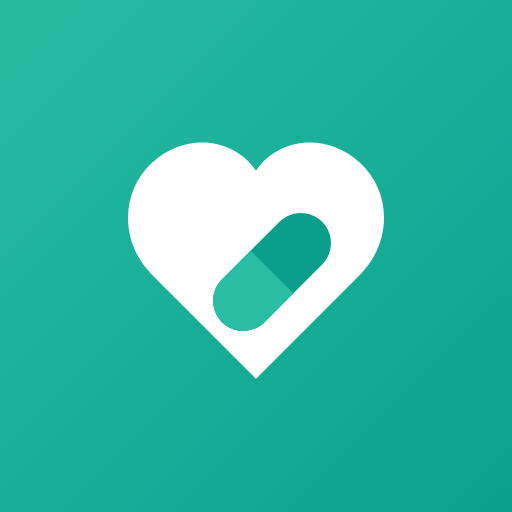
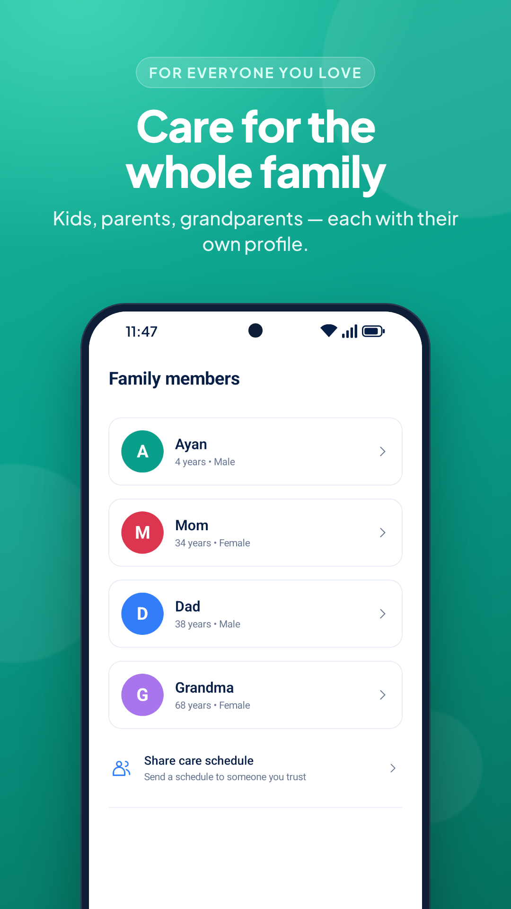
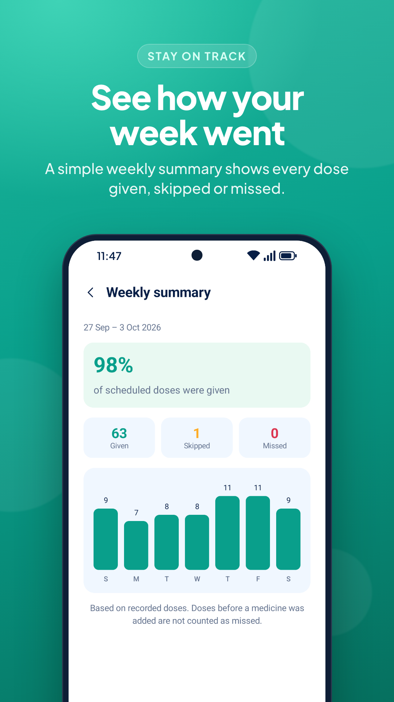
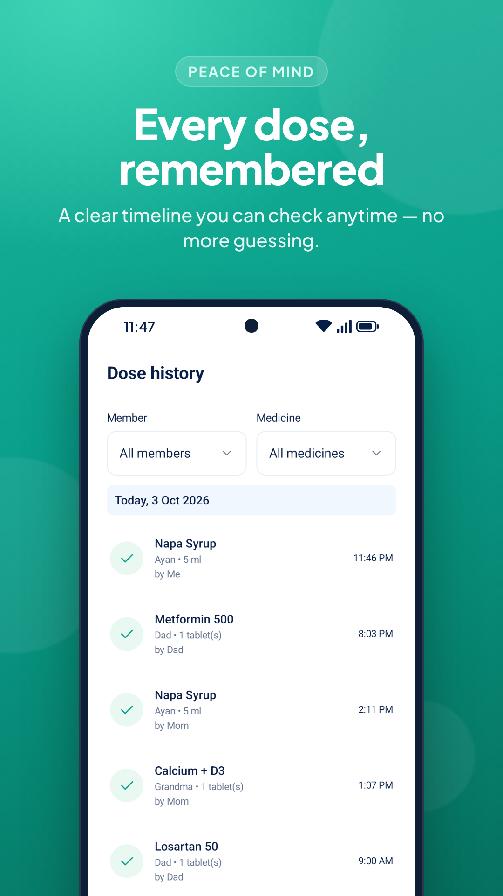
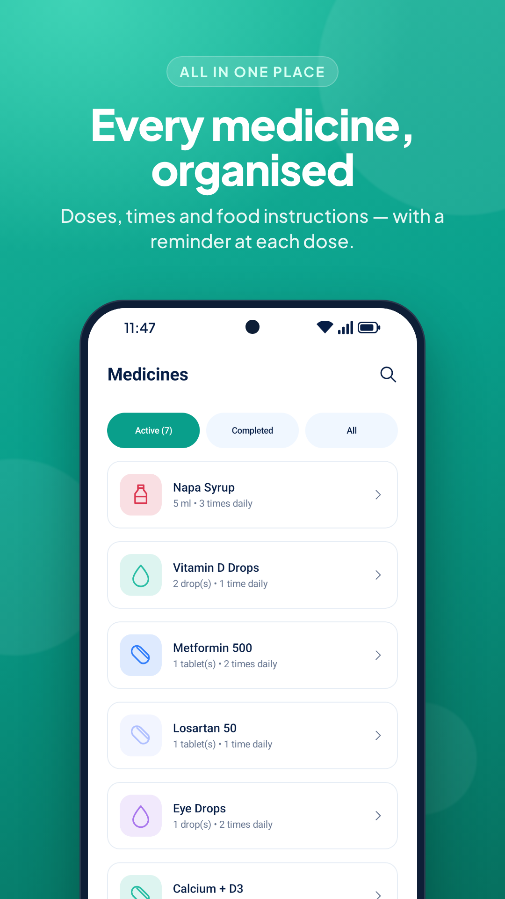
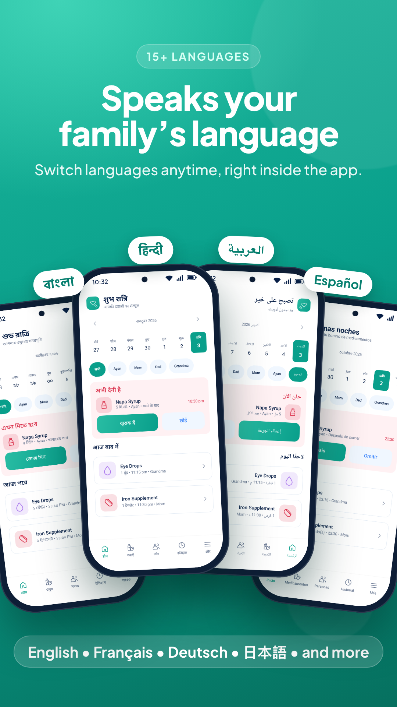

Your own routine
Put the medicine schedule from your prescription into a daily plan you can check on your phone.

CAREDOSEMEDICINE REMINDERS & DOSE TRACKINGWhich medicine is due? Was that dose already given? Keep schedules and dose records for you and your family together, so there’s one place to check.

ONE PLACE TO CHECK
Put the medicine schedule from your prescription into a daily plan you can check on your phone.
Keep separate profiles for the people you look after, with their own medicines and dose records.
Share a copy of a schedule through an app you choose. Shared copies don’t update automatically.
THE EVERYDAY DETAILS
Practical tools for following the schedule your healthcare professional gave you.
Set dose times, enable reminders and record a dose as given or skipped. You can snooze a reminder for ten minutes.
Local notifications · SnoozeSave medicine amounts, food instructions, course dates and notes. Attach a prescription photo from your photo picker.
Medicine schedules · Prescription photosCheck dose history and a weekly summary of recorded and missed doses. Add who gave a dose and a note when useful.
History · Weekly summariesExport records and prescription photos to a backup file. You can also enable weekly backups to a folder you choose.
File export · Restore · Optional weekly backupReminders depend on notification permissions, alarm access and your phone’s battery settings. Backup files contain health information and are not encrypted by CareDose. Keep them somewhere private.
FROM THE APP
A look at summaries, records, medicines and language choices. Tap an image to see it full size.




These promotional screenshots contain sample records, not treatment instructions. The app includes 19 language options, including English and Bangla.
GETTING STARTED
No account to create. You can explore the app with sample data before adding your own records.
Create a profile for yourself or someone you care for. Only add another person’s health details when you have their permission or authority to do so.
Add the medicine, amount and times from the prescription. CareDose does not calculate the correct dose for you.
Allow notifications and follow the alarm guidance on your phone. Record doses as given or skipped, and refer back to History when needed.
A FEW THINGS TO KNOW
Yes. Profiles, schedules, dose history and local reminders work offline. Google Play updates, email, sharing through online apps and cloud storage providers may need a connection.
This release does not sync records between phones. You can share a text copy of a medicine schedule or a weekly summary, but changes on one phone won’t appear on another.
Export a backup from More → Backup and restore, keep it safe, then restore it on the new phone. Android automatic backup and device transfer are disabled for app data. Restoring a CareDose backup replaces the current records; review the confirmation carefully.
No. You enter the schedule and dose supplied by your healthcare professional. The app records what you enter and is not a source of diagnosis, treatment or missed-dose advice.
In the app’s private storage on your phone. There is no CareDose cloud account, advertising or analytics SDK. Sharing and file backups are optional. Read the privacy policy for storage, backup and deletion details.
Android permissions, exact-alarm access, battery restrictions and device settings can affect delivery. Check More → Reminders and use another reminder method when a dose is time-critical.
CAREDOSE FOR ANDROID
Start with one profile and the schedule you already follow.